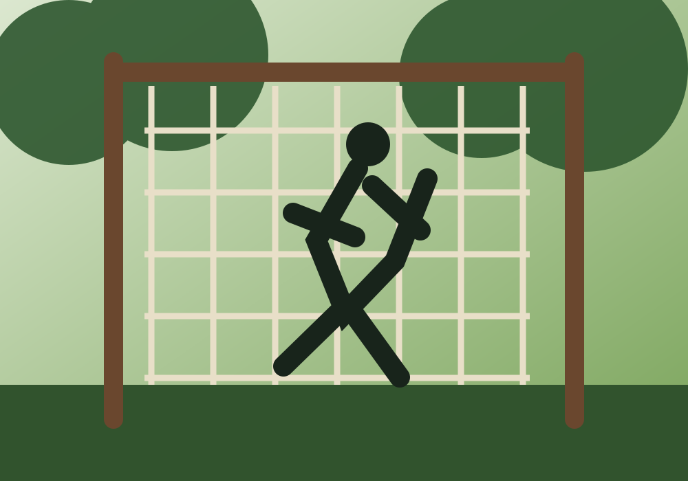

Samen bouwen aan Survivalvereniging Ommen
Een plek waar sport, uitdaging en gezelligheid samenkomen.
Samen bouwen aan Survivalvereniging Ommen
Wij geloven dat Ommen klaar is voor een eigen survivalvereniging. Daarom werken we aan de oprichting van Survivalvereniging Ommen: een plek waar sport, uitdaging en gezelligheid samenkomen.
Het initiatief is ontstaan vanuit een groep enthousiaste survivalrunners uit Ommen. Samen met vrijwilligers, toekomstige leden, sponsoren en de gemeente willen we een trainingslocatie realiseren op Sportpark Westbroek. Een plek waar iedereen zich kan ontwikkelen, elkaar helpt en met plezier buiten sport.
Waarom een survivalvereniging in Ommen?
Survivalrun is een sport die steeds populairder wordt, maar in Ommen is er nog geen mogelijkheid om deze sport te beoefenen. Met de oprichting van Survivalvereniging Ommen willen we daar verandering in brengen.
Ons doel is een laagdrempelige vereniging waar iedereen zichzelf kan uitdagen, nieuwe technieken leert en onderdeel wordt van een enthousiaste groep sporters.
Naast een nieuw sportaanbod willen we bijdragen aan een actieve en gezonde leefstijl én meer verbinding creëren tussen inwoners van Ommen.
Wat is survivalrun?
Survivalrun is een uitdagende buitensport waarbij hardlopen wordt gecombineerd met technische hindernissen, zoals touwklimmen, netten, monkeybars en balanshindernissen.
Het is een sport waarin kracht, conditie, techniek en doorzettingsvermogen samenkomen. Anders dan bij veel obstakelruns draait survivalrun niet alleen om snelheid, maar vooral om het beheersen van de juiste technieken. Daardoor blijf je jezelf ontwikkelen en is iedere training een nieuwe uitdaging.

Waar staan we nu?
De voorbereidingen zijn in volle gang. Op dit moment werken we aan:
- de vergunning voor de trainingslocatie;
- de oprichting van de vereniging;
- het aanvragen van subsidies;
- het werven van sponsoren;
- het uitwerken van het ontwerp van de survivalbaan.
Zodra de vergunning is verleend, kunnen we starten met de aanleg van de eerste hindernissen. Daarna hopen we zo snel mogelijk de eerste trainingen te organiseren.
Doe mee!
Een vereniging bouw je samen. Daarom zijn we op zoek naar enthousiaste mensen die willen meedenken, meehelpen of straks willen meetrainen.
Samen maken we survivalrun mogelijk in Ommen. Doe mee en bouw vanaf het begin mee aan onze vereniging!